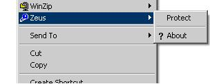
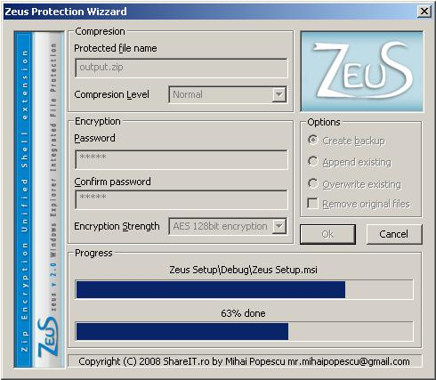
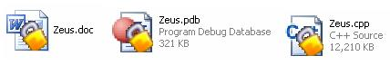
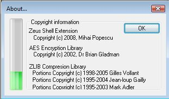

Utilisation de Zeus

Le chiffrage et le déchiffrage est réalisé par un menu contextuel (droit - cliquer dessus le dossier/chemise),
par deux commandes: "Protect" et "Unprotect". La commande "Protect" apparaît dans le menu seulement sur les dossiers/chemises qui ne sont pas déjà chiffrés et ne sont pas comprimés,
et la commande "Unprotect" apparaît seulement sur les archives qui sont chiffrées et comprimées.
La fenêtre principale

La fenêtre principale est divisée dans 4 grands groupes fonctionnels :
- Compression
Est assuré par le Zip avec 6 niveaux de compression :
- Store
- Fastest
- Fast
- Normal
- Maximum
- Ultra
- Chiffrage
Est assuré par AES en 3 modes :
- AES 128 bits
- AES 256 bits
- 128/256 aléatoire pour chaque chemise
- Options
- Créer le support
Crée les dossiers de secours.
- Apposer exister
Ajouter aux dossiers existants ou aux archives pour se protéger si ceux/celle-ci existe déjà.
- Recouvrir exister
Il enlève les dossiers existants pour créer les neufs.
- Enlever l'original
Il enlève les dossiers qui sont protégés ou les archives qui vont être non protégé.
- Progrés
Il a deux barres de progrès. Le premier est de montrer le progrès pour le dossier courant et le second le progrès général.
Les fichiers protégés
Un fichier est reconnu comme un protégé un si c'est un fichier ZIP qui contient des fichiers cryptés / dossiers avec AES et compressés (par quelque méthode que ce soit recevable par le format ZIP,
en général Store ou Deflate). Les fichiers reconnus sont affichés dans l'Explorateur se chevauchent avec une icône en mode superposition sur l'icône standard (un cadenas qui apparaît dans le coin
en bas à droite de l'icône d'origine) car le fichier protégé peut avoir une extension. À un moment où un fichier, il a été chiffré et compressé avec Zeus, sa reconnaissance pour la superposition
de l'icône spécifique, il se fait uniquement par la lecture du contenu et de son identification comme un fichier ZIP chiffré avec Zeus.

La fenêtre About

Cette fenêtre est ouverte également à partir du menu contextuel appliqué sur les fichiers et affiche les informations génériques sur le taux de compression et les informations sur le copyright.
Le taux de compression est défini comme une division entre les fichiers compressés dimension et sa taille avant la compression. ZIP a une méthode qui ne développe que les données en cas de LZW
qui peuvent doubler ou tripler la taille du fichier dans les cas extrêmes.
Résumé
Le projet Zeus est un utilitaire gratuit, son but étant de satisfaire les besoins de la sécurité et la compression de données pour l'utilisateur final. Zeus de l'innovation consiste en ce que
les fichiers sont protégés dans un non-homogène en utilisant une méthode de cryptage d'une force aléatoire. Il a été utilisé le libre et les bibliothèques standard pour la compression et le
cryptage d'offrir une alternative gratuite à WinZip. Zeus a une interface facile à utiliser et il est intégré dans Windows Explorer.